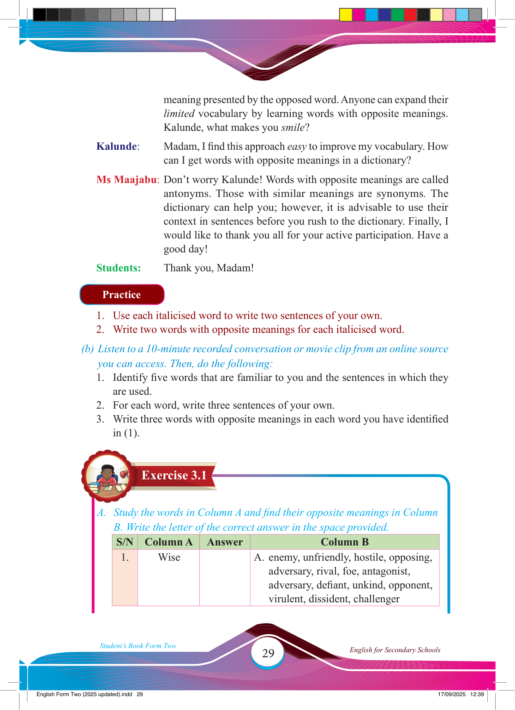

Exercise 3.1
meaning presented by the opposed word. Anyone can expand their
limited vocabulary by learning words with opposite meanings.
Kalunde, what makes you smile?
Kalunde:
Madam, I fi nd this approach easy to improve my vocabulary. How
can I get words with opposite meanings in a dictionary?
Ms Maajabu: Don’t worry Kalunde! Words with opposite meanings are called
antonyms. Those with similar meanings are synonyms. The
dictionary can help you; however, it is advisable to use their
context in sentences before you rush to the dictionary. Finally, I would like to thank you all for your active participation. Have a good day!
Students:
Thank you, Madam!
Practice
1. Use each italicised word to write two sentences of your own.
2. Write two words with opposite meanings for each italicised word.
(b) Listen to a 10-minute recorded conversation or movie clip from an online source you can access. Then, do the following:
1. Identify fi ve words that are familiar to you and the sentences in which they are used.
2. For each word, write three sentences of your own.
3. Write three words with opposite meanings in each word you have identifi ed in (1).
A. Study the words in Column A and fi nd their opposite meanings in Column
B. Write the letter of the correct answer in the space provided.
S/N
Column A
Answer
Column B
1.
Wise
A. enemy, unfriendly, hostile, opposing,
adversary, rival, foe, antagonist, adversary, defi ant, unkind, opponent, virulent, dissident, challenger